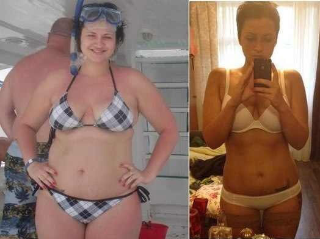
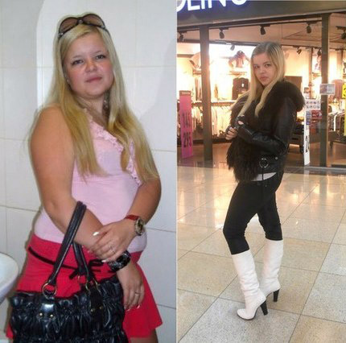
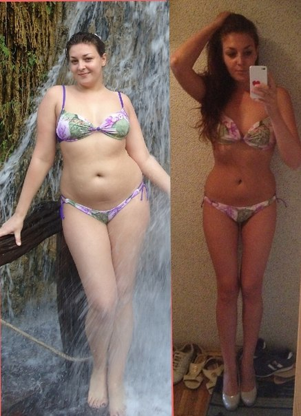
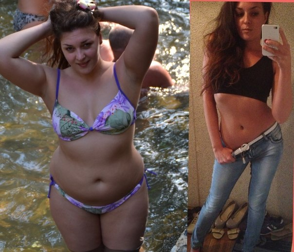
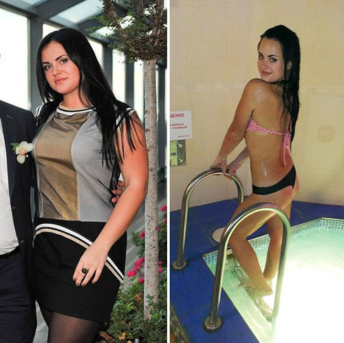

How did I drop weight from 90 kg / 198 lbs to 58 kg / 127 lbs in just two months?
What to do if diets and trainings are no longer helpful?
The story of how I refused to sit on a diet and finally lost the desired kilos.
Hi everyone! My name is Kelly Backer and this is my microblog where I share with you the story of my fast weight loss. I have received a lot of messages recently, so I will try to answer all your questions as fast as possible and, what more important, I will try to support you!
That is why I had decided to write this article and answer the most desirable question: how has I managed to lose up to 32 kg / 70 lbs in weight?
My normal weight has always been 58 kg / 127 lbs. But after the birth of the son, the weight began to rise inexorably. Last year, in winter, the weight reached its peak 90 kg / 198 lbs ... I lived with overweight for 5 years, it is very difficult and scary when at 28 you are not able to get out of bed in the morning because legs are swollen as cans, to perform basic household chores, because it is hard to move, and you have a very strong shortness of breath. I realized that this overweight just simply kills me, and I urgently need to act!
Perhaps I tried all possible diets, result - zero!
I could eat each day only half a tomato and half a cucumber, weight of course decreased, but I was very angry, especially at people who were eating beside me. It caused wild irritation and shock! The most offensive - the weight increased immediately, just as easily as it left.
Realizing inefficiency of my efforts, I decided to hold to proper nutrition.
I excluded fried food, stopped eating after 6 p.m., but finally nothing worked. I already gave up, when suddenly…

Phase 1
I found out that today no one loses weight with proper nutrition and sports. In general, you can eat anything you want and still lose weight.
I decided to know more about it
The goal of the diet is to use special product – fat burner, which burns off extra calories gradually. It is a special diet weight-loss product ForskolinFit. All you need for losing weight –to take it twice a day.
Of course, I didn’t buy it immediately, as knew nothing about this product. I went to the nutritionist to ask what experienced doctors think about "slimming" with ForskolinFit. Below I will write what the doctor said.
Expert comments

Nicole White, dietitian: Our doctors started to advise their patients to use powerful fat burners long ago. ForskolinFit, you're talking about, - is the newest product in dietology. It is really a very powerful fat burner. It consists of a large number of effective ingredients - fat burners. All this "mix" creates a stunning effect. The most amazing is that after long trials, we found out that the fat is burned considerably, that you can eat anything you want at any time - just use twice a day ForskolinFit. I think that anyone who wants to lose weight should try ForskolinFit.
Nicole White, dietitian: Our doctors started to advise their patients to use powerful fat burners long ago. ForskolinFit, you're talking about, - is the newest product in dietology. It is really a very powerful fat burner. It consists of a large number of effective ingredients - fat burners. All this "mix" creates a stunning effect. The most amazing is that after long trials, we found out that the fat is burned considerably, that you can eat anything you want at any time - just use twice a day ForskolinFit. I think that anyone who wants to lose weight should try ForskolinFit.
I began to take ForskolinFit more than once per day!
On doctor’s advice I ordered ForskolinFit on the official website. I received it very quickly and I started to use after each meal. A week later I dropped 6 kg / 13 lbs - my joy was boundless! I did not stop and decided to lose ALL extra kilograms :)
Inspired by the first results I continued to lose weight!
After one month I was just amazed by the results, achieved thanks to ForskolinFit! It was just incredible for me!
At that time my weight was 73 kg / 160 lbs, I lost 17 kg / 37 lbs!
I was pretty close to my goal, lost enough weight, but still decided to "kill" the remnants of excess weight, losing again 8 kg / 17 lbs.
My final victory was losing 32 kg / 70 lbs!
After two weeks I lost last extra 7 kg / 15 lbs! My joy was boundless - now I am slim again and dropped even more than wanted! My advice to slimmers - it is important to understand that you do it for yourself, weight loss begins with self-love. You should come to senses and start acting! Just use ForskolinFit and lose weight! Attached is the website for ordering ForskolinFit.
These are the stages of my weight loss
Just two months!
I can't believe I look like that!
All is possible without any diets, hard trainings, stretch marks, sagging breasts and other consequences of fast weight loss.
here is website ForskolinFit
Сomments:
-
15.04.2015, в 14:01
Brenda
For 1.5 weeks I lost 10 extra kilograms (22 lbs) after childbirth. Thank you Kelly. Lose weight easily, quickly and without efforts. I know Kelly and her wonderful family personally. A person of great will-power, the girl with an IQ of Einstein.
-
14.04.2015, в 18:20
Tina
Kelly, thank you greatly for the article! I tried different ways to lose weight, even crazy correct counting of calories ruined my life as it could, it was impossible to visit somebody or go to the cafe, without taking a kitchen scale and notebook with calculator ... Now during 4 weeks I lost 18 kg (39 lbs), without doing active sports (though I try to walk frequently and occasionally do light morning exercises when I am able to win morning laziness), without taking fasting days and making restrictions (cracking after midnight prawns with mayonnaise sauce and drinking dry wine) I'm happy and my boyfriend (now my future husband) too, even more, he takes me on his hands, though I plan to lose more 8 kilograms (17 lbs), till my wedding I’ll do it for sure! one more thing, I always had problems with my skin! pimples, acne, went to the cosmetician for a monthly face cleaning, using ForskolinFit, my skin became a million times better! I stopped going to the cosmetician! acne, huge red interior and small convex white pimples disappeared, skin was not oily anymore, despite the abundance of fatty food! Most important is that I am not afraid of overeating! because I am always well-fed and happy! ForskolinFit-is super!
14.04.2015, в 20:59Kelly
I am very happy for you and the other girls, women, beginning to lose weight, I support your decision, because the main thing is the harmony of the soul, which can only be achieved in harmony with the body. Write about your results. Good luck to all of you ) Sorry for not answering to everybody, there is no time - family, work)! Don’t be offended please!)
-
12.04.2015, в 22:47
Julia
As Kelly truly stated in the article, I sat for a long time "in the bush", i.e. was invisible in the group and no registration on the site. Then finally I bought scales, registered and now every week rejoice at my results)) For the first week I was able to lose 5 kg (11 lbs). Honestly, it was amazing and unusual)) I am not going to stop and continue losing weight! Thank you for ForskolinFit!

-
11.04.2015, в 02:19
Nicole
Don’t torture yourself, quickly join and lose weight with pleasure))! Also lost weight using ForskolinFit
-
10.04.2015, в 23:01
Grace
Kelly, thank you! For a 2 month I lost 20 kg / 44 lbs. Later even more, but it is real! The main is desire. It is the most wonderful diet!!! I'm losing weight easily with tasty, hearty meal. Plump girls – join us!!! You will succeed!

-
08.04.2015, в 14:31
Rose
Losing weight for 1,5 months and minus -28kg (61 lbs), it was very interesting to read Kelly’s detailed story, there was little motivation to lose weight, but one day, looking at myself in the mirror I saw a puffy fat OLD WOMAN, and I'm only 21, despite the fact that my husband weighed 60 kg (132 lbs), one can imagine how we looked together !!! Frankly I believed in the diet immediately, my husband supported me, the first result did not wait -5kg (11 lbs) in the first week, very glad that I didn’t torture myself by other diets, starvation, buckwheat with yogurt and lettuce, ForskolinFit is my first and last diet - lifestyle!! Pudgy girls do not despair, there is a magic wand that will help you to start your new life! Start now!!! Thank you Kelly!

-
07.04.2015, в 10:18
Allison
All my life I was looking for different diets, suitable for my stomach and willpower (which is embryonic), product recommended by Kelly - is the perfect way to lose weight for everybody in the shortest possible time and absolutely without efforts! I also want to say that Kelly-is cookery specialist from the God - her masterpiece recipes are simple and awesome!!!!! In general, I think that there are no miracles - but it’s not true, check for yourself personally.
-
06.04.2015, в 13:01
Mia
Thanks to Kelly I changed my life for the better, lost 15kg / 33 lbs and it is not a limit. Many people criticize this kind of weight loss, but is it useful for a young girl or guy to be thick and at the same time to have problems with childbearing, to have difficulties when climbing stairs or simply running anywhere without efforts. Start now and you will succeed as many could do long ago! ForskolinFit is the leader!
18.04.2015, в 12:03Kelly
I am already not the only one who lost weight with the help of ForskolinFit. Some of my friends and mates have also ordered several bottels of ForskolinFit. I can say that none of them is dissatisfied. Therefore, I am 100 percent sure in the effectiveness of this supplement. You can do this! So pull yourself together and start doing something!
Girls I just wanted to ask you to write me about your results: how much you have lost. This is very exciting to know how other people benefit from taking this supplement.